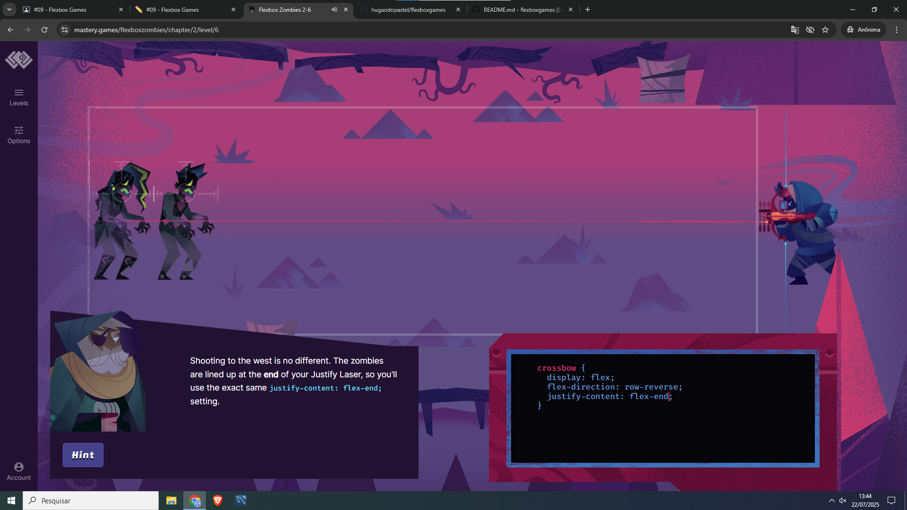

Nível 5
Um nivel simples.
Nível 6
Fase complicada pois tinha que mirar para tras.
Nível 7
Fase complicada pois tinha que mirar pra baixo.
Nível 2
Uma fase simples.
Nível 3
Uma fase simples tambem, porem com tres sapos.
Nível 4
Esse nivel eu ja tinha me complicado um pouco.
font-family: define a fonte utilizada no site.margin: define o espaçamento externo dos elementos.color: define a cor do texto.background-color: define a cor de fundo (não usado aqui, mas comum).max-width: limita a largura máxima de imagens, para que fiquem responsivas.display: flex: permite usar Flexbox para layout mais organizado (ex: alinhar imagens e textos).Um caso real onde eu usaria Flexbox seria em um menu de navegação horizontal. Com display: flex no container do menu e justify-content: space-between, posso distribuir igualmente os links do menu. Também usaria align-items: center para alinhar ícones ao centro.
Outro exemplo seria uma galeria de fotos responsiva. Com Flexbox, é fácil criar quebras automáticas com flex-wrap: wrap e manter um espaçamento padronizado entre os elementos.